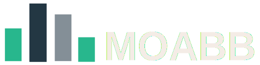
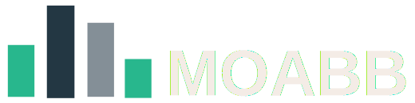

Note
Go to the end to download the full example code.
Tutorial 6: Using X y data (epoched data) instead of continuous signal#
Sometimes, we have data in the format of X and y, rather than as a continuous signal. In such cases, the data is already segmented into epochs. This creates a problem, because MOABB is designed to work with continuous data organized by subjects and sessions.
The following tutorial creates a dataset that contains data in the form of epochs. A special paradigm is provided, which calls an additional method on the dataset so that MOABB can process it correctly. After this, a standard classification is performed.
The dataset provides the X y data as a single user and a single session.
Epochs count before classification 100
Start classification ...
DummyRawEpochsDataset-WithinSession: 0%| | 0/1 [00:00<?, ?it/s]
DummyRawEpochsDataset-WithinSession: 100%|██████████| 1/1 [00:00<00:00, 2.62it/s]
DummyRawEpochsDataset-WithinSession: 100%|██████████| 1/1 [00:00<00:00, 2.62it/s]
Results:
score time samples dataset pipeline
0 0.57 0.07491 100.0 DummyRawEpochsDataset XD+TS+LR
# Authors: Anton ANDREEV
import numpy as np
import pandas as pd
from pyriemann.estimation import XdawnCovariances
from pyriemann.tangentspace import TangentSpace
from sklearn.linear_model import LogisticRegression
from sklearn.metrics import accuracy_score, make_scorer
from sklearn.pipeline import make_pipeline
from moabb.datasets.base import BaseDataset
from moabb.evaluations import (
WithinSessionEvaluation,
)
from moabb.paradigms.base import BaseParadigm
class RawEpochParadigm(BaseParadigm):
"""
A minimal paradigm that directly uses dataset.get_epoch_data()
with no filtering, epoching, or signal processing.
Useful when your data is in the format X, y.
"""
def __init__(self):
# filters=None indicates no filtering is done
super().__init__(filters=[])
self.return_epochs = False
def get_data(self, dataset, subjects, return_epochs=False, **kwargs):
X_all, y_all, meta_all = [], [], []
for subject in subjects:
X, y = dataset.get_epoch_data(
subject
) # (n_trials, n_channels, n_times), (n_trials,)
if isinstance(y, pd.Series):
y = y.values
n_trials = len(y)
X_all.append(X)
y_all.append(y)
# Build metadata for each trial, filling defaults for session and run
meta = pd.DataFrame(
{
"subject": [subject] * n_trials,
"session": [1] * n_trials, # Default to 1 if sessions unknown
"run": [1] * n_trials, # Default to 1 if runs unknown
"trial": list(range(n_trials)),
"label": y,
}
)
meta_all.append(meta)
X = np.concatenate(X_all, axis=0)
y = np.concatenate(y_all, axis=0)
meta = pd.concat(meta_all, ignore_index=True)
return X, y, meta
def is_valid(self, dataset):
return hasattr(dataset, "get_epoch_data")
@property
def scoring(self):
return make_scorer(accuracy_score)
def used_events(self, dataset):
# Return event dict if needed, or {} if irrelevant
return {}
@property
def datasets(self):
return []
def make_process_pipelines(self, dataset, **kwargs):
# Return a dummy no-op processing pipeline
return [lambda raw: raw]
class DummyRawEpochsDataset(BaseDataset):
"""
Minimal custom dataset compatible with RawEpochParadigm.
"""
def __init__(self, subjects=[1]):
super().__init__(
subjects=subjects,
sessions_per_subject=1,
events={"left": 0, "right": 1}, # required dummy event map
code="DummyRawEpochsDataset",
interval=[0, 1],
paradigm="RawEpochParadigm",
)
self.n_channels = 8
self.n_times = 128
self.n_trials = 100 # number of epochs
self.n_classes = 2
def data_path(
self, subject, path=None, force_update=False, update_path=True, verbose=None
):
return None # Not needed since we generate synthetic data
def _get_single_subject_data(self, subject):
raise NotImplementedError("Not used with RawEpochParadigm")
def get_epoch_data(self, subject=None):
"""
Simulates epochs: shape (trials, channels, time), and labels
Trials is the number of epochs to generate.
"""
rng = np.random.default_rng(seed=subject)
X = rng.standard_normal((self.n_trials, self.n_channels, self.n_times))
y = rng.integers(low=0, high=self.n_classes, size=self.n_trials)
return X, y
dataset = DummyRawEpochsDataset()
paradigm = RawEpochParadigm() # using the new special RawEpochParadigm paradigm
X, labels, meta = paradigm.get_data(dataset=dataset, subjects=[1])
print("Epochs count before classification", len(labels))
evaluation = WithinSessionEvaluation(
paradigm=paradigm, datasets=dataset, overwrite=True, suffix="motan"
)
pipelines = {}
pipelines["XD+TS+LR"] = make_pipeline(
XdawnCovariances(nfilter=4, estimator="oas", xdawn_estimator="scm"),
TangentSpace(),
LogisticRegression(),
)
print("Start classification ...")
scores = evaluation.process(pipelines)
print("\n\nResults:\n", scores[["score", "time", "samples", "dataset", "pipeline"]])
Total running time of the script: (0 minutes 0.556 seconds)
Estimated memory usage: 294 MB